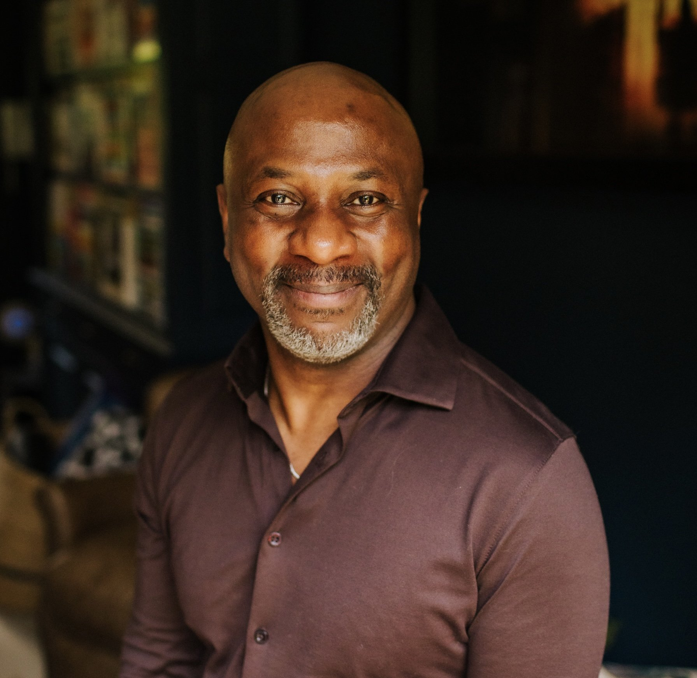

Executive Coaching
When the role changes, you may need to change with it.
Senior leadership brings different questions. Decisions carry greater consequence. Relationships become more complex. Expectations are not always spoken. There is more to hold, and often fewer places where you can think completely openly.
Executive coaching creates space to step outside the noise, see what is really happening and choose how you want to lead what comes next.

The moments people bring
Often, coaching begins when something has changed.
You've stepped into something bigger.
A promotion, expanded remit or greater visibility has changed what the role requires. What got you here may not be enough for what comes next.
You're leading through uncertainty.
The organisation is shifting and people are looking to you for clarity before everything is clear.
Something important needs saying.
A relationship, conflict or difficult conversation can no longer be avoided.
The old way of leading is reaching its edge.
What once made you successful may now be constraining what becomes possible.
You're carrying too much.
Too many decisions come back to you. Too much depends on your involvement. The question is how to create greater ownership around you.
The question has become personal.
It is no longer simply, “What should I do?”
“Who do I need to become to lead what comes next?”
Space to think
The higher you go, the fewer places there are to think completely openly.
Senior roles can become strangely isolating.
There are colleagues you need to lead.
People whose confidence you need to maintain.
Boards, investors, clients or stakeholders whose expectations you need to manage.
Teams looking to you for direction.
And decisions whose consequences do not disappear when the meeting ends.
Coaching creates a different kind of space. A place where you do not need to perform certainty, where competing perspectives can be held long enough to understand them, and where assumptions can be challenged without organisational politics getting in the way.
Where you can think about what is happening, who you are being inside it and what you want to do next.
What becomes different
The work is reflective. The impact needs to be practical.
- See more clearly. Separate signal from noise and understand what is really happening beneath the immediate pressure.
- Choose more deliberately. Recognise the assumptions, habits and patterns shaping your decisions so that you have greater choice in how you respond.
- Lead with greater authority. Find a way of leading that fits both who you are and the responsibility you now carry.
- Create more ownership around you. Notice where you have become the answer to too many problems and create the conditions for other people to step forward.
- Have the conversations that matter. Say what needs saying with greater clarity, courage, judgement and humanity.
Clarity is useful. Choice makes it powerful. Action makes it real.
Beneath the obvious problem
Sometimes the situation is only part of the story.
Leadership challenges are rarely just technical. A difficult conversation may also be shaped by what you believe conflict means. Delegation may be influenced by a story that says being valuable means being indispensable.
A new role may expose an identity that has not yet caught up with your authority. A boardroom can activate assumptions about who is allowed to speak, challenge, take space or be uncertain.
Part of my work is to notice those deeper patterns without losing sight of the practical reality in front of us. Questions we might explore include:
- What do you believe leadership requires of you?
- What role have you learned to play?
- What are you assuming you must carry?
- What are you protecting?
- What keeps repeating?
- What becomes possible if that assumption is no longer the only one available?
How it works
Start with what is happening.
You do not need to arrive with a perfectly defined coaching objective. We begin with the situation as it is.
The role.
The decision.
The relationship.
The pressure.
The conversation you are avoiding.
The pattern you cannot quite understand.
From there, we agree the focus for the work and keep returning to what matters most as the context evolves.
- Start with a conversation. A 20-minute first conversation to understand what is happening, what you are looking for and whether working together feels useful.
- Agree the focus. We identify the areas that matter and what meaningful progress would look like.
- Work with the real world. Coaching sessions use the live situations you are facing. Decisions, relationships, conversations, team dynamics and leadership choices become the material for the work.
- Notice what changes. We pay attention not only to insight, but to what is becoming different in how you think, choose, communicate and lead.
- Review and adapt. The coaching remains responsive to what is actually happening rather than following a predetermined curriculum.
Confidentiality
A confidential space within an organisational context.
Where coaching is organisation-sponsored, we contract clearly around purpose, confidentiality and any appropriate stakeholder involvement.
The coaching conversation itself remains confidential. Where useful, objectives or progress may be reviewed with the leader and sponsor together, but there should be no ambiguity about what remains private.
The aim is to create enough organisational alignment for the work to matter while protecting the honesty that makes coaching useful.
Who I work with
Senior leaders carrying real responsibility.
I work with people whose decisions affect more than themselves. The organisations, sectors and situations vary. What tends to be consistent is that the work matters: there is something consequential at stake, whether that is performance, people, strategy, relationship, reputation, identity or change.
How I coach
Reflection, challenge and enough space to hear what is really going on.
My coaching is thoughtful, direct and curious. I am interested in the immediate leadership challenge, but also in what may be shaping it beneath the surface.
My practice draws on more than 5,000 hours of coaching and facilitation alongside training in Narrative Coaching, systemic and analytic approaches, the Enneagram, embodiment and leadership development. I do not arrive with a single framework that every leader needs to fit. Different situations require different lenses.
Sometimes the work is strategic.
Sometimes relational.
Sometimes it is about behaviour.
Sometimes the most useful question is about identity.
The aim is to help you see more clearly, make more intentional choices and translate those choices into how you actually lead.
Client perspectives
What people experience.
“
Robert's coaching style, listening skills and curiosity took me to a new personal level. To understand how focussing on me and my personal goals would help me in my professional life was life changing.
Alexis WardHead of Adviser Experience, Scottish Widows
“
Robert has an engaging and inspirational personality that is key to catalyzing leadership growth. He motivates those around him to set their sights higher and achieve more.
Matthew PaineGlobal Training Specialist, Siemens
Common questions
A few practical questions.
How long does executive coaching last?
Engagements vary according to context and purpose rather than following one fixed model. A defined engagement might involve six sessions across approximately six months; other work may be shorter, more intensive or continue for longer where that remains useful. Spacing sessions allows time to apply the work in real situations, and we agree an initial structure, objectives and review point before beginning.
Is Executive Coaching confidential?
Yes. What you discuss remains private, subject to the ethical, legal and safeguarding limits agreed when we contract. If an organisation is sponsoring the work, we agree in advance what may be shared, typically the broad objectives and a high-level review of progress, not the content of private sessions.
Can my organisation sponsor the coaching?
Yes, where appropriate. We contract clearly at the outset around purpose, confidentiality and any appropriate stakeholder involvement, so there is no ambiguity about what remains private and what may be reviewed with a sponsor.
Do you work internationally?
Yes. Coaching is available online internationally, with selected in-person work by arrangement.
Is this only for leaders who have a problem?
No. Many leaders begin coaching because something is going well and the next level requires something different. Coaching can be particularly useful during growth, promotion, increased responsibility, organisational change or when a leader wants to work more intentionally rather than waiting for something to go wrong.
What are you facing?
Leadership gets more complex the higher you go.
You do not need another person telling you what to do. Sometimes you need somewhere to think properly about what is happening, see what you may be missing and decide how you want to lead what comes next.